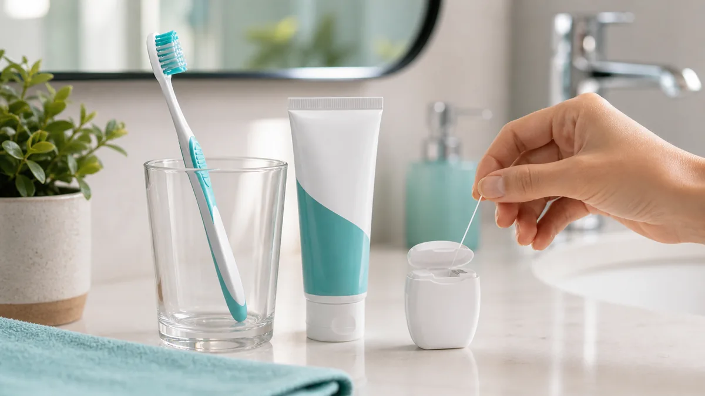

Cuidar da saúde bucal não é apenas escovar os dentes quando surge incômodo. A prevenção começa em casa, mas a limpeza profissional no consultório tem um papel importante para acompanhar gengiva, dentes, restaurações e pontos onde a escova não alcança tão bem.
O que é profilaxia dental?
A profilaxia dental é uma limpeza feita por profissional de odontologia para remover acúmulos de placa bacteriana, manchas superficiais e tártaro. Em muitos casos, ela também inclui orientação personalizada de escovação e uso do fio dental.
Mesmo quem escova bem pode acumular placa em regiões de difícil acesso, como entre os dentes, próximo à gengiva, atrás dos dentes inferiores e ao redor de aparelhos, próteses ou restaurações.
Por que a limpeza dentária ajuda na prevenção?
A placa bacteriana é uma película que se forma sobre os dentes. Quando não é removida adequadamente, pode favorecer cáries, inflamação gengival, sangramento e mau hálito. Com o tempo, a placa pode endurecer e virar tártaro, que não sai apenas com escovação comum.
5 dicas simples para melhorar sua saúde bucal
- Escove os dentes todos os dias com creme dental fluoretado. A escovação ajuda a controlar a placa bacteriana e o flúor auxilia na prevenção de cáries.
- Use fio dental diariamente. Ele alcança áreas entre os dentes onde a escova não limpa com a mesma eficiência.
- Observe sinais da gengiva. Sangramento, inchaço, vermelhidão ou mau hálito frequente merecem avaliação.
- Evite beliscar açúcar muitas vezes ao dia. A frequência de açúcar favorece o ambiente para cáries.
- Faça acompanhamento odontológico. A periodicidade da limpeza varia conforme cada paciente, histórico de cáries, gengiva, aparelho, próteses e rotina de higiene.

De quanto em quanto tempo fazer profilaxia?
Não existe uma única regra para todos. Algumas pessoas precisam de limpezas mais frequentes, especialmente quando têm gengivite, acúmulo de tártaro, aparelho ortodôntico, próteses, restaurações extensas ou dificuldade de higienização.
Na avaliação, a equipe pode orientar uma frequência adequada para seu caso e explicar quais pontos da higiene diária merecem mais atenção.
Profilaxia dental em Itaquera
A LaCari Odontologia atende na Avenida Pires do Rio, 3369, no Jardim Norma, região de Itaquera. Se você sente mau hálito frequente, sangramento na gengiva, acúmulo de tártaro ou está há muito tempo sem limpeza, vale agendar uma avaliação.
Quer agendar uma limpeza ou avaliação?
Chame a LaCari pelo WhatsApp e conte se você procura profilaxia, avaliação de rotina ou orientação para melhorar sua saúde bucal.
Agendar pelo WhatsApp